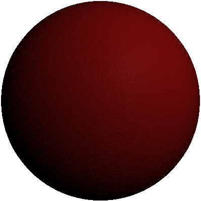

PlasticStructuredRedMaterial QML Type
Structured red plastic material. More...
| Import Statement: | import QtQuick3D.Materials 1.15 |
Detailed Description

The structured plastic material has the following properties:
| Property Name | Property Type | Description |
|---|---|---|
| uEnvironmentMappingEnabled | bool | Does the material use an environment map. Default is true. |
| uShadowMappingEnabled | bool | Does the material use a baked shadow map. Default is false. |
| roughness | real | Roughness of the material. Range is [0, 1], with 0 being totally reflective. Default is 0.25. |
| material_ior | real | Index of refraction for the material. Sensible range for different types of plastic is [1.4, 1.6]. Default is 1.46. |
| intensity | real | The intensity of the emission. Default is 1.0. |
| texture_scaling | real | Scale of the texture map. Default is 0.1. |
| bump_factor | real | Strength of the bumpiness. Default is 0.4. |
| diffuse_color | vector3d | Base color of the material. Default is Qt.vector3d(0.451, 0.04, 0.035). |
| uEnvironmentTexture | TextureInput | The environment texture map. Enabled when uEnvironmentMappingEnabled is true. Default is a Texture with source "maps/spherical_checker.png". |
| uBakedShadowTexture | TextureInput | The baked shadow texture map. Enabled when uShadowMappingEnabled is true. Default is a Texture with source "maps/shadow.png". |
| randomGradient1D | TextureInput | A texture map used to create the random bumpiness of the material together with randomGradient2D, randomGradient3D, and randomGradient4D. Default is a Texture with source "maps/randomGradient1D.png". |
| randomGradient2D | TextureInput | A texture map used to create the random bumpiness of the material together with randomGradient1D, randomGradient3D, and randomGradient4D. Default is a Texture with source "maps/randomGradient3D.png". |
| randomGradient3D | TextureInput | A texture map used to create the random bumpiness of the material together with randomGradient1D, randomGradient2D, and randomGradient4D. Default is a Texture with source "maps/randomGradient3D.png". |
| randomGradient4D | TextureInput | A texture map used to create the random bumpiness of the material together with randomGradient1D, randomGradient2D, and randomGradient3D. Default is a Texture with source "maps/randomGradient4D.png". |